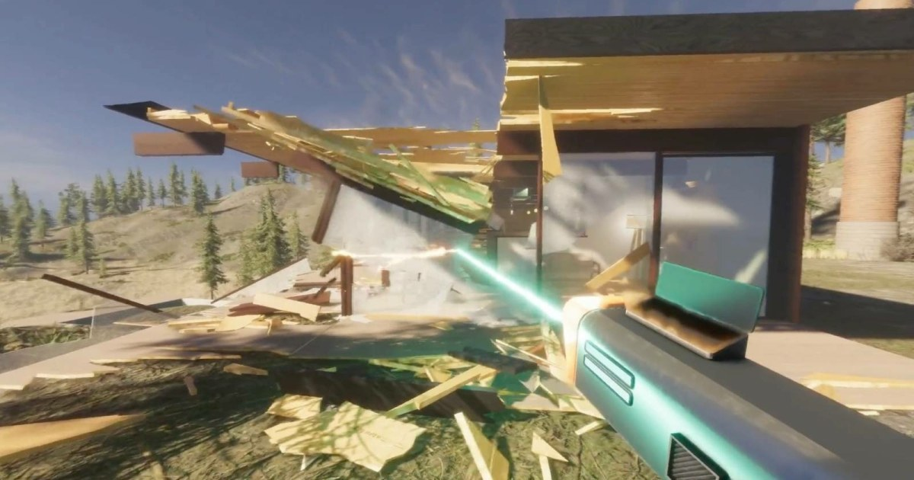

Unity 破壞案例：Open Plan 在執行時即時計算碎裂
Luke Mitchell 展示 Open Plan 的房屋破壞原型，表示物件沒有預先切碎，而是在執行時生成破裂。網格的破壞材質定義碎裂形態、聲音與質量，並搭配 PhysX 和多項運算管理措施。

Unity ★★★☆☆
完整分析
破壞材質連結網格與物理
每個網格指定破壞材質，記錄碎裂模式、聲音、質量及其他屬性。開發者說每次破裂都在執行時動態計算，主要物理工作交由 PhysX，並非播放事先準備好的碎裂形狀。
切割與吸引碎片形成玩法
示範後續加入可切割物件的雷射，以及把碎片吸進漩渦的黑洞手榴彈。推論：破壞系統在這個案例裡同時承擔玩家互動與物件反應，而不只是場景中的固定視覺演出。
即時碎裂仍須分配計算成本
作者列出記憶體配置、進階網格 API、減少物理關節，以及場景繁忙時把昂貴計算分散到多個影格等措施。這是開發中的遊戲展示，沒有提供裝置規格或可通用的幀率保證。
BRIEF｜來源已驗證；證據深度較有限，完整分析會明確區分已知資訊與待驗證事項。